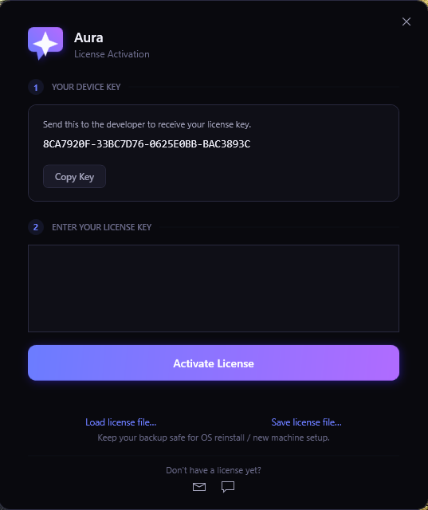
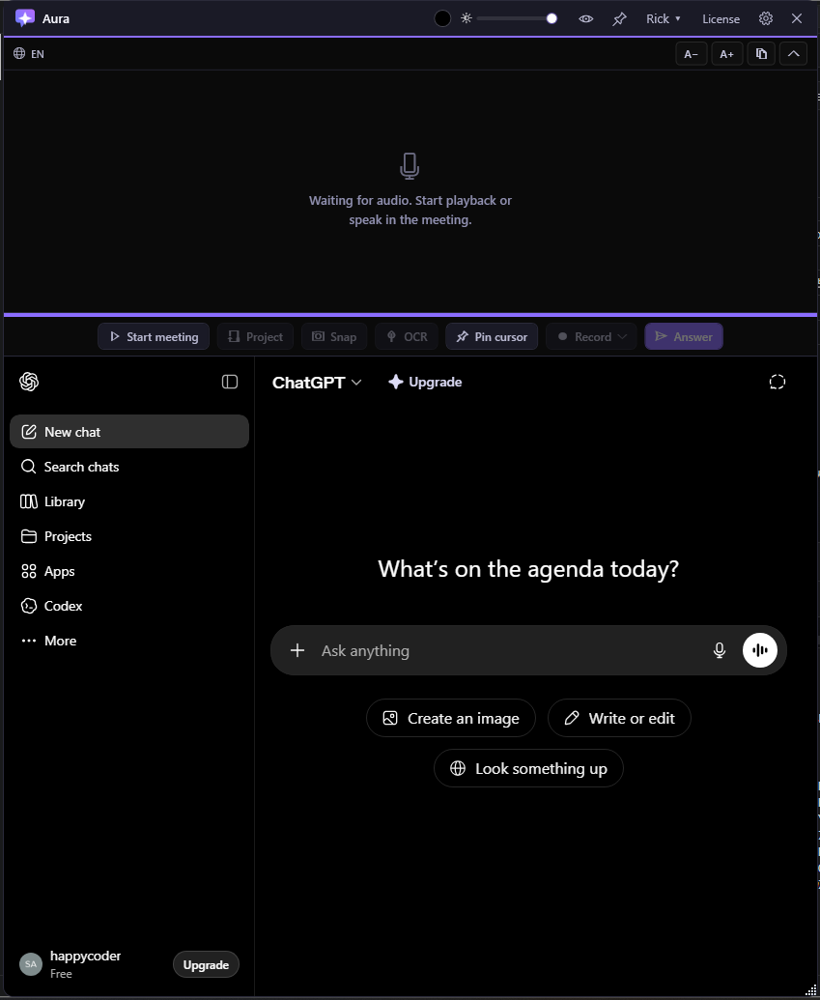
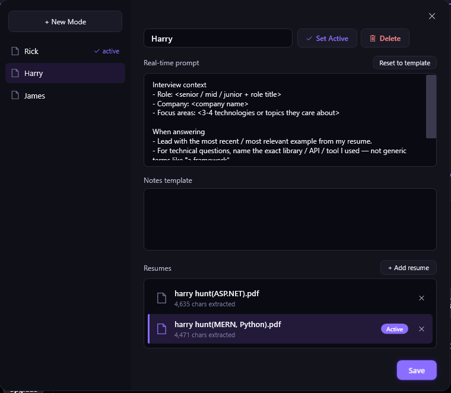
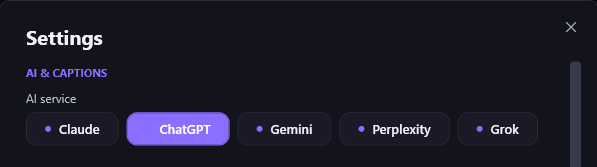
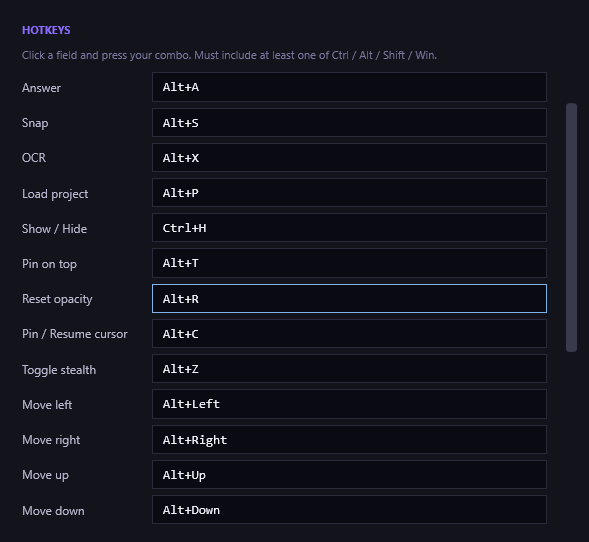
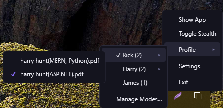

Aura User Guide
A complete walkthrough — from installation to live-interview workflow. Everything you need to use Aura confidently in front of a real interviewer.
Get Aura for Windows
One licence, one device. Longer plans save up to 44%.
- Full stealth + Pin cursor — invisible to Zoom, Teams, Meet, OBS
- All five AI tabs — ChatGPT · Claude · Gemini · Perplexity · Grok
- Multi-resume profiles, Snap, OCR, Project context, hotkeys
- Free updates while your licence is active
- Personal support on Telegram
Message @KAZI_STE on Telegram with the plan you want and we'll walk you through payment (PayPal, crypto, or bank transfer) and issue your key. Licences bind to your device's hardware fingerprint and survive a Windows reinstall.
1. Install & activate

-
Run the installer.
Double-click
AuraSetup-1.1.3.exe. The wizard auto-closes any running Aura instance, copies files toC:\Program Files\Aura\, and registers Start Menu / optional desktop shortcuts. - WebView2 runtime check. The installer verifies Microsoft Edge WebView2 Runtime is present (it ships with Windows 11). If it's missing, the installer opens the official download page.
- Launch Aura. The first window you'll see is the License dialog. Paste your activation key and click Activate.
- Save the backup .lic file. Aura prompts you to save a backup of your license file. Keep it somewhere safe — you'll need it if you reinstall Windows or move to a new machine.
.lic file — re-installing on the SAME machine reuses it automatically.
2. First launch

After activation Aura opens its main window centred on your primary monitor. You'll see four areas:
Titlebar
Opacity slider, background colour, stealth eye, pin cursor, mode chip, License, Settings, Close.
Caption pane
Live captions from your meeting audio appear here.
Action bar
Start meeting · Project · Snap · OCR · Pin cursor · Record · Answer.
AI tab
WebView2 hosting ChatGPT / Claude / Gemini / Perplexity / Grok.
3. Create a profile (mode)
A mode is one interview preset — name, real-time prompt, notes template, and any number of resumes. You'll probably want one mode per company or per role family.
- Click the profile chip in the titlebar (it says
Default ▾or your current active mode), then choose Manage Modes… - Click + New Mode in the sidebar. Give it a clear name like "Senior Backend at Acme".
- The Real-time prompt textbox is pre-filled with a starter template. Edit the role, company name, and focus areas to match this specific interview.
- Optional: fill in Notes template with extra context (recent news about the company, the interviewer's LinkedIn, etc.).
- Click Set Active to make this the profile the next meeting will use. Click Save to persist.
4. Upload your resume(s)

Aura supports multiple resumes per mode — useful when you have stack-specific versions (e.g. one MERN-focused, one ASP.NET-focused). Only the resume you mark Active is sent to the AI when you start the meeting.
- Inside the Manage Modes dialog, click + Add resume in the Resumes section.
- Pick a PDF. Aura extracts the text and shows a card with the filename and character count.
- Click any row to mark it Active — the active card gets an accent left rail, purple tint, and a small Active badge on the right.
- Add as many resumes as you want; click the ✕ on a row to remove it.
5. Customise the prompt
The Real-time prompt goes to the AI once at the start of each meeting (alongside the active resume and notes). Use it to tell the AI exactly how to behave.
The starter template covers role context and answering style. Edit it — the more specific you are, the better the answers:
- Name the exact role title the interview is for.
- List 3–4 focus technologies the interviewer is likely to drill on.
- Tell the AI which examples from your resume to lead with.
- Set the tone (concise, story-driven, etc.).
Click Reset to template any time to drop back to the starter text and start over.
6. Pick your AI tab

Open Settings → AI & CAPTIONS. Five services are pre-wired:
- ChatGPT — best general-purpose, fastest text injection.
- Claude — strongest reasoning on long context; good for code review questions.
- Gemini — Google account login works through Aura's Edge user-agent.
- Perplexity — adds web-search citations to answers.
- Grok — alternative.
Whichever you pick, sign in inside the WebView2 tab once. The session persists between Aura restarts.
7. Start meeting
Click the big Start meeting button in the action bar (or just toggle the active profile from the tray). This:
- Opens a fresh AI chat on the active service.
- Injects your mode payload — the real-time prompt, notes template, and active resume.
- Primes the answer-style rules (whisper mode by default — interview-style first-person replies, 80-word cap).
- Resets the caption deduplication so the next Answer click sees only what's said from now on.
The button flips to Stop meeting. Click it any time to end the session — the captions clear and the AI tab stays where it is.
8. Get an Answer
The Answer button (or Alt+A) takes whatever the interviewer just asked and pushes it to the AI for you. Priority order:
- Text you've selected in the caption pane (drag to highlight specific lines you want answered).
- Caption text that arrived since the last Answer click (rolling tail).
- The most recent OCR text result (fallback).
The reply streams back into the AI tab. Read it off the right pane while you talk.
9. Snap / OCR
When the interviewer shares a screenshot — code on a whiteboard app, a diagram, a stack trace — capture it without alt-tabbing:
Snap (Alt+S)
Drag a rectangle on screen. Aura crops it and pastes the image into your AI tab as a chat attachment. Use this for diagrams, UI mocks, or any visual content the AI needs to see.
OCR (Alt+O)
Same drag-a-rectangle UI, but Aura runs Windows OCR on the selection and sends the extracted text. Use this for code or text-heavy content where the AI just needs to read it.
10. Load project for context
If the interview is around a take-home or a system you should know, load a local folder so the AI has the codebase context.
- Click Project in the action bar.
- Browse to the project root, or paste the path. Aura analyses the structure and shows a tree on the left, a code editor on the right.
- Click Send whole project to push a project summary + your Explain prompt to the AI.
- Click any file in the tree to open it on the right. Click Send selected file to send just that file's content.
The Explain prompt (Settings → PROJECT) controls how the AI is asked to explain the project. Default asks for a structured overview + likely interview topics.
11. Stealth mode
Aura's main window is excluded from screen capture via Win32's WDA_EXCLUDEFROMCAPTURE. Zoom, Teams, Meet, OBS, Loom, and most recording software see straight through it — they record whatever's behind Aura, not Aura itself.
Toggle with the eye icon in the titlebar or Alt+E:
- Stealth ON — the eye icon glows green. The window is invisible to capture. The cursor cloak is active (see Pin cursor below).
- Stealth OFF — the eye icon is dim. The window is normally visible. Use this for demos or troubleshooting.
12. Pin cursor
Even with stealth ON, the OS cursor itself is drawn by the Windows compositor at a layer above stealth — meaning the screen-share viewer can still see your mouse moving. The Pin cursor feature solves that.
Same screen, two perspectives. The viewer sees a stationary cursor; you see a follower that tracks your real mouse so navigation still works.
How it works
- Stealth ON, no pin — your real cursor is hidden system-wide. A decoy arrow follows the mouse for the viewer to see. Shape never changes — no I-beam, no hand, no resize.
- Pin clicked — the decoy freezes at the click position. A second arrow (visible only to you, hidden from capture) tracks your real mouse so you can still navigate.
- Unpin — the decoy resumes following the mouse, your follower disappears, the OS cursor snaps back to the pin position before showing again. No visible teleport for the viewer.
Pin via the titlebar pin icon, the action bar Pin cursor button, or Alt+C.
Auto-pinning kicks in for Snap, OCR, Project, and folder browse — the viewer sees a stationary cursor for the entire operation.
13. Opacity & appearance
The titlebar slider sets window opacity. Range is 20 % to 100 % — useful when you want Aura semi-transparent so you can read text behind it.
- Click anywhere on the slider track to jump to that opacity directly.
- If you accidentally drag too low and can't find the controls, press Alt+0 to snap back to 100 %.
- The colour swatch next to the slider opens a colour picker. Pick a tint and Aura derives a 5-shade family for the whole UI.
14. Hotkeys

All defaults use Alt + a single mnemonic letter for fast one-handed use. Customise any of them in Settings → HOTKEYS.
| Action | Default |
|---|---|
| Send the latest caption tail to the AI | Alt+A |
| Drag a rectangle to Snap + send | Alt+S |
| Drag a rectangle to OCR + send text | Alt+O |
| Open the Project panel | Alt+P |
| Show / Hide Aura | Alt+H |
| Pin on top (always-on-top toggle) | Alt+T |
| Pin / Resume cursor | Alt+C |
| Toggle stealth | Alt+E |
| Reset opacity to 100 % | Alt+0 |
Hotkeys register globally via RegisterHotKey — they work even when Aura isn't the foreground app.
15. Tray menu

Right-click Aura's tray icon for quick actions without showing the main window:
- Show App — bring Aura's window back if it was hidden.
- Toggle Stealth — same as the eye icon.
- Profile ▸ — switch the active mode. Modes with 2 + resumes expand into a sub-menu so you can pick the exact resume in one click.
- Settings — opens the Settings dialog.
- Exit — fully quits Aura (restores the system cursor first).
Single left-click on the tray icon toggles the main window's visibility.
16. Privacy & license
What stays local
- Your resume PDFs, extracted text, mode prompts, notes — all in
%APPDATA%\Aura\settings.json. - License file in
%LOCALAPPDATA%\Aura\license.lic. - Recordings (if you use the Record button) save to the folder configured in Settings → RECORDING.
What leaves your machine
- Whatever you explicitly send to your chosen AI (resumes, prompts, captions, snaps) — under that AI service's own ToS.
- No telemetry. No analytics. Aura does not phone home.
License
Your activation key is hardware-bound (CPU + disk + BIOS fingerprint). On reinstall on the SAME machine, the saved .lic file is reused automatically. Moving to a new PC uses a new activation slot.
Aura — version 1.1.3 · last updated 2026